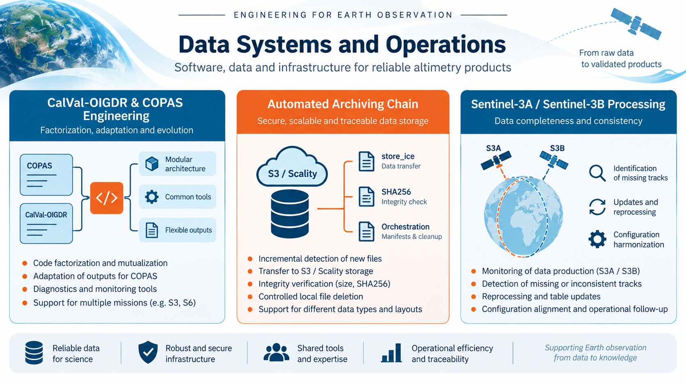
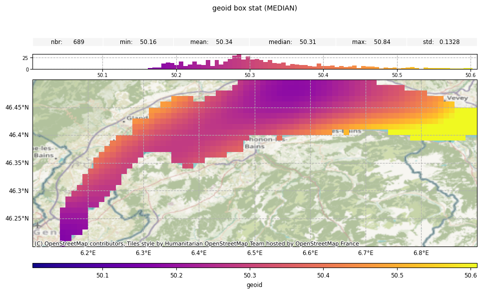
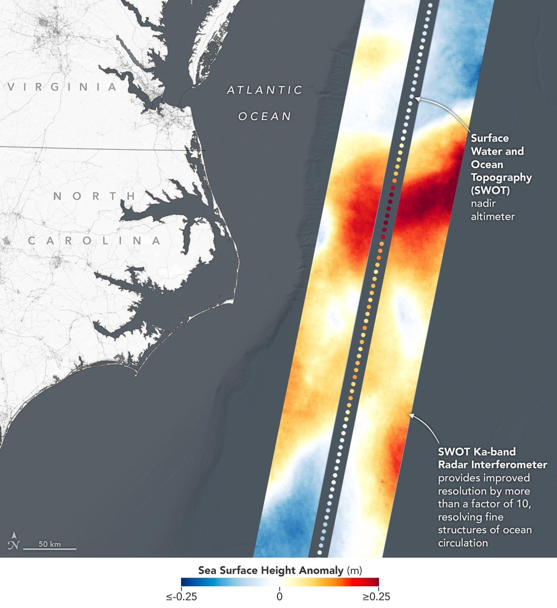
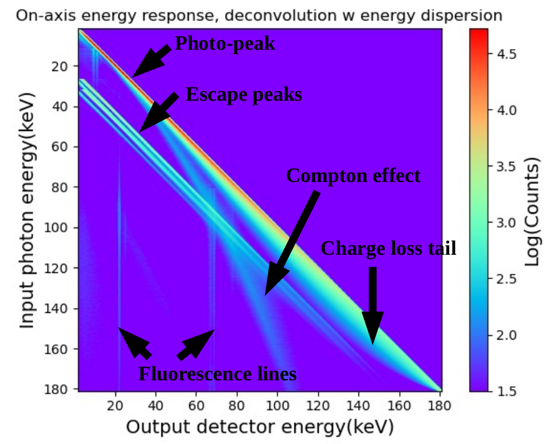
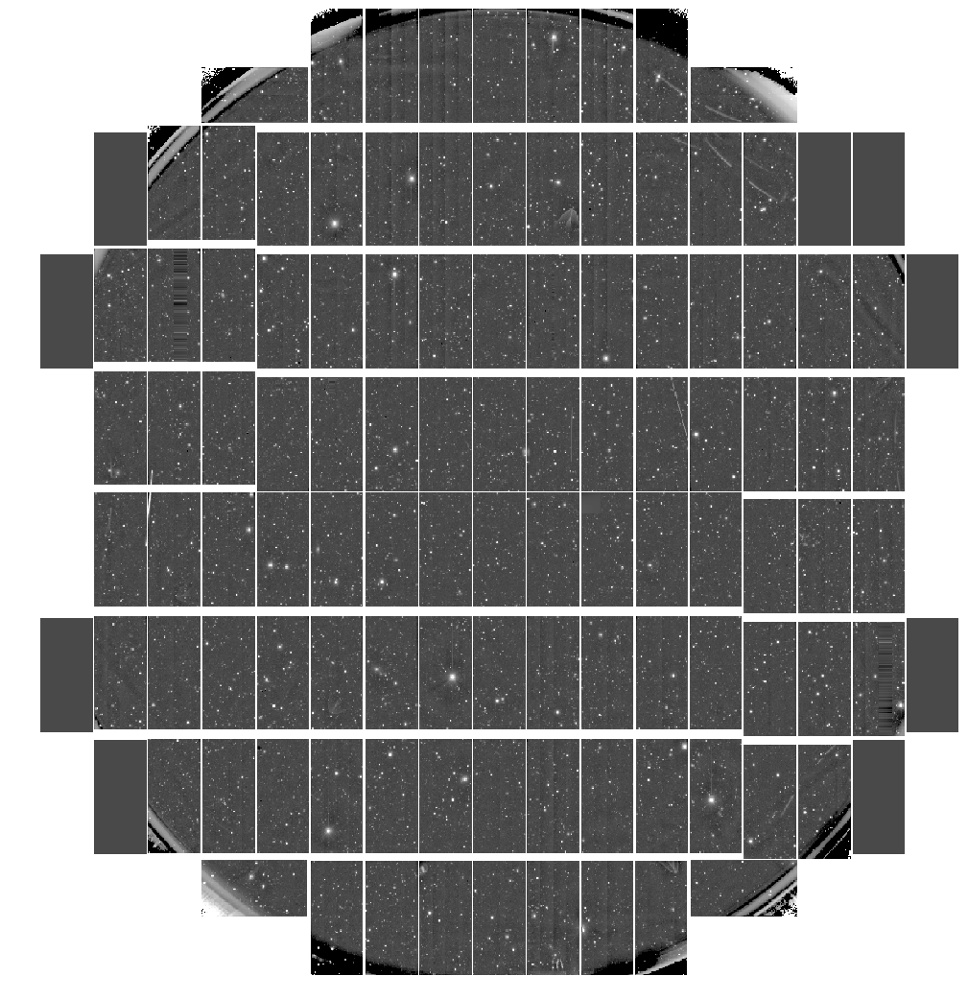
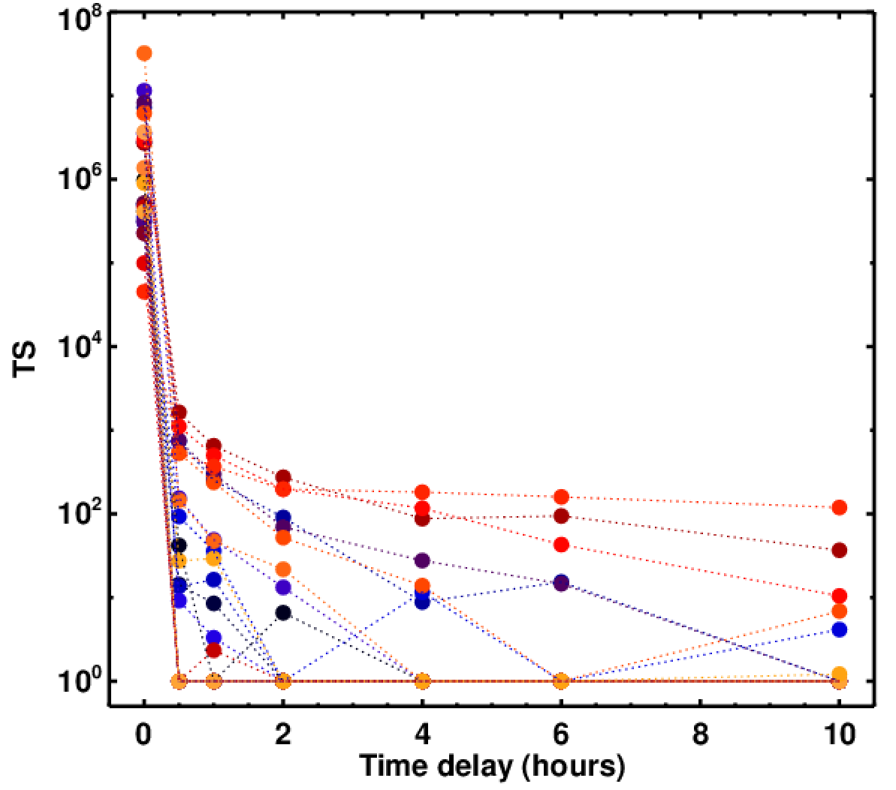
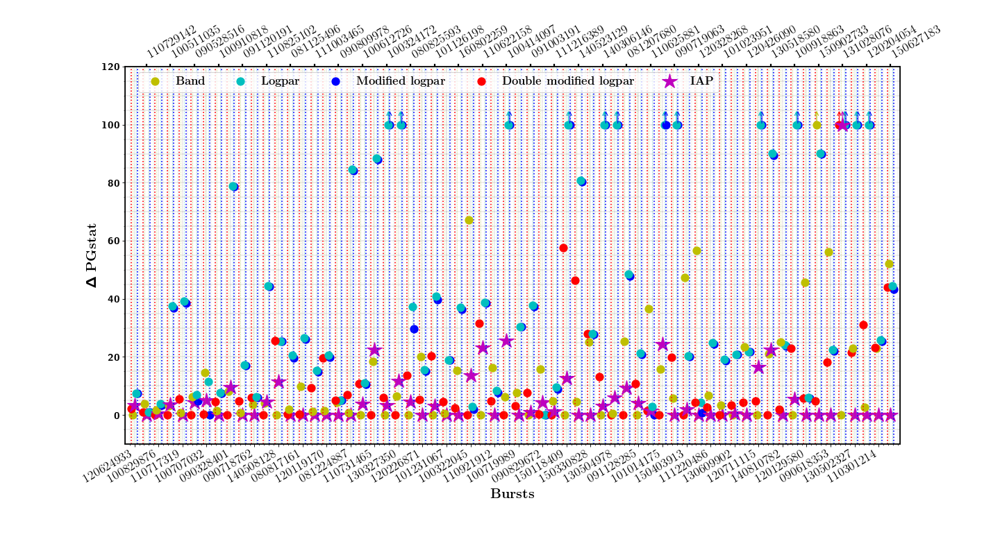
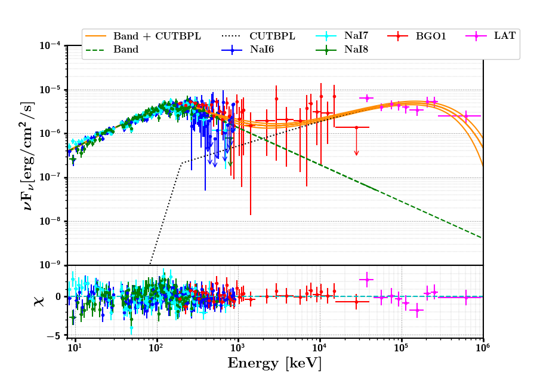

Projects across astrophysics and Earth observation.
The projects below preserve the scientific content of the original website while presenting each contribution separately, with its figures, instruments and context.

CLS — Data Engineering & CalVal Operations
Scientific software factorization, COPAS / CalVal-OIGDR integration, automated data archiving, and Sentinel-3A / Sentinel-3B processing and completeness validation.

CLS — Hydrology
Scientific data analysis, processing chains, parametric studies and altimetric-performance simulations.

CLS — SWOT / KaRIn & S3NG / SAOOH
Scientific data analysis, processing chains, parametric studies and altimetric-performance simulations.

IRAP — SVOM / ECLAIRs
Calibration, response files, detector-response homogeneity and performance.

CPPM — LSST / HSC
Supernova pipeline validation and image-processing calibration.

INFN — Fermi / CTA
LAT analysis, CTA simulations and high-energy GRB studies.

LUPM — Fermi spectral modelling
A physically motivated fitting function for GRB MeV spectra based on an internal-shock synchrotron model.

PhD — GRB 090926A
Joint GBM/LAT spectral analysis and the time evolution of a high-energy spectral break.